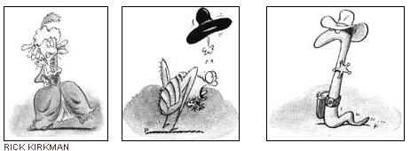

The beneficial nematode, alias "killer roundworm," may be nature's simplest answer yet for getting rid of troublesome, blood sucking fleas that infest backyards, homes and pets each year like clockwork.
The nematode, Steinernema carpocapsae, hunts down fleas in the pre-adult, pupae, and larval stages of their growth, which account for 95 percent of the flea population, even searching out the fleas that lie dormant in cocoons before reaching maturity. The killer roundworm enters the pest's body through any convenient opening, such as the spiracles, where air is taken in, and releases a bacteria that kills the flea within 48 hours.
When the host is dead, the nematode sheds its skin and begins to reproduce inside the corpse. The offspring hunt for new prey, destroying the remaining fleas in the wake of the nematode life cycle. If there are no host bugs to be found, the nematodes starve and biodegrade, leaving no harmful backyard bug alive to tell the story.
The killer nematodes have been perfected and raised by Biosys, a company that specializes in biological pest control. At Biosys headquarters in Palo Alto, California, studies have been conducted over the past decade on the uses of the nematode.
The killer roundworm has been implemented commercially over the past five years to combat cranberry and citrus pests, but was never available to the garden growing public due to certain impracticalities in growing and shipping the "flea-killing commandos," say the nematode researchers.
Preparation of the nematode for widespread use had its difficulties, according to Doug Ross, an entomologist who has studied the worm developed by Biosys. In the past, nematodes were raised inside insects and then removed from the host's body to be used in pest control, which proved to be a costly and time consuming process. Then there was the problem of keeping the worms alive for storage and later use.
To solve these problems, Biosys designed a specialized fermenter to replicate perfect growing conditions.
Nutrients, temperature, and oxygen concentration were stabilized at the exact level for maximum nematode growth. The the nematodes were encased in a brown organic coating to maintain the correct level of moisture for the worm to survive.
The nematodes come packaged in a seven-ounce container that holds more than 75 million worms in a comatose state for up to five months. "They are alive, but not doing a whole heck of a lot," Ross says.
These parasitic nematodes are now available in three different varieties from Peaceful Valley Farm & Garden Supply:
"Steinernema carpocapsae are best suited to cooler climates, and are most effective against mobile pests such as termites, fleas, webworms, sod webworm and more.
Steinernema feltiae are similar to Steinernema carpocapsae except they are best suited to warmer climates.
Heterohabditis bacteriophora are adapted to all climates, and are most effective against sedentary pests, such as grubs, root weevils, ants, juvenile and queen, termites and more." - Mother
The worms can be used in any climate, as long as their food source is available. Across the country, wetter climates have the worst flea problems, but the nematodes aren't regionalist. Wherever there are fleas, they'll be ready to kill. The worms will work in a variety of places beside the garden, such as on gravel, and the bark of some trees. "Once they're out there, and if it's moist enough, they'll start hunting," says Doug Ross. And the nematodes will keep on searching for their next flea meal for up to six weeks after the last flea has died, preventing new fleas from reinfesting the area.
The reliable nematode kills off only harmful bugs, says Ross, who has helped develop Bio Flea Halt! The nematode won't harm the other beneficial bugs that live in backyard soil, he says, so the natural ecosystem of the yard is preserved.
Of course, Ross has a vested interest in the promotion of the nematode, but Dr. Albrecht Koppenhofer, a researcher at the University of California at Davis's Department of Nematology, agrees that the nematode is as amazing as it sounds.
"Studies have shown that most beneficial insects are immune to nematodes," says Koppenhofer. "In nature the host range is restricted."
The nematode preys upon the soil stages of fleas and white grubs; the larval stage of Japanese, Oriental, fuller rose, May and June beetles; and assorted chafers, cutworms, sod webworms, armyworms, billbugs, leatherjackets, pickleworms, squash vine borers, clear wing stemborers; black vine, strawberry root, citrus, and apopka weevils; and little leaf notchers.
The nematodes have no effect whatsoever on people, plants, or animals, says Doug Ross. The stage of the worm in Bio Flea Halt! does not have a mouth, so its attacks are limited to the pests it parasitizes. Because they do not become a permanent part of the ecosystem that they are introduced to, the nematodes won't affect livestock, groundwater, or soil.
"They are what you call obligate parasites," says Ross. "If they don't find an insect to penetrate and live in, they die. They can do nothing else."
The nematodes aren't harmful when accidentally ingested. "The only way that they can kill you is if you drown in them," says Dr. Koppenhofer. "And that would require a lot of nematodes:'
Even the EPA considers nematodes a safe alternative to pesticides, and does not regulate their use, says Ross. And because the nematodes occur in nature, they are an all-organic means of pest control.
"You have to remember," Ross says, "that there are billions of nematodes in every cubic meter of soil anyway. So adding a few more million is kind of a drop in the bucket."
Did you know? People throughout the ages have searched for practical, natural flea control. Ancient Egyptians covered slaves in donkey's milk to keep the fleas away. Fashionable folks of the 18th century wore tubes filled with blood round their necks to deter the pests. But more recent home remedies such as garlic and brewer's yeast have been shown to do little more, often nurturing healthy and happy fleas instead of deterring them.
Human history marches on, and a kinder, more effective flea control method is here. And as is often the case with nature, the solution was right in the earth.
|
 RICK KIRKMAN The beneficial nematode naturally gets rid of fleas. |
|
|